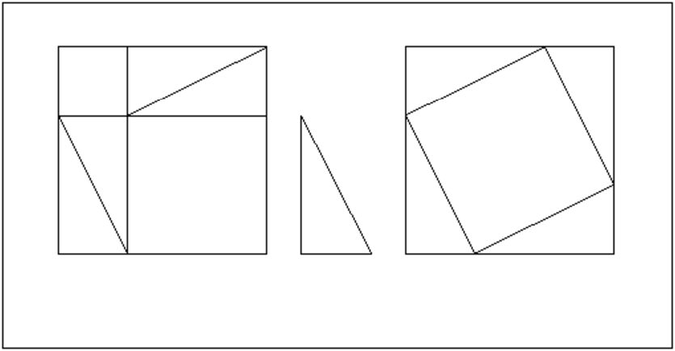
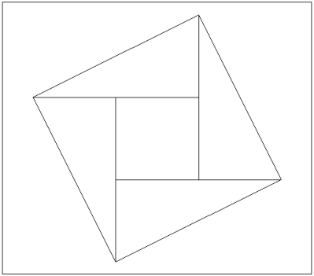
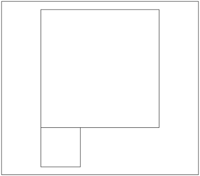
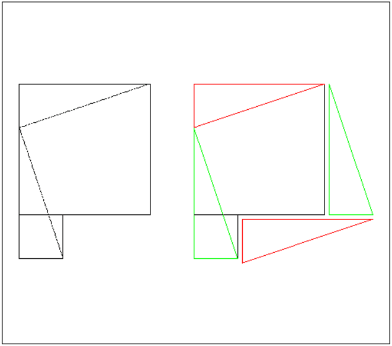
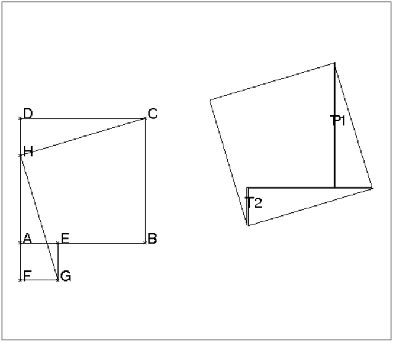
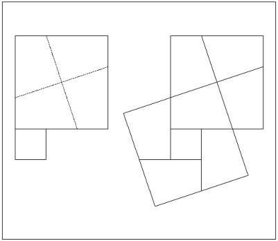
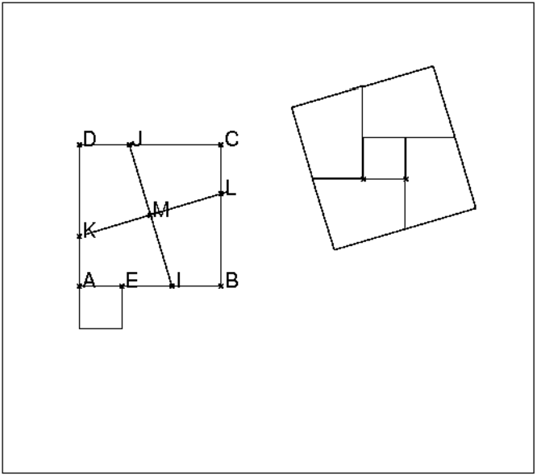
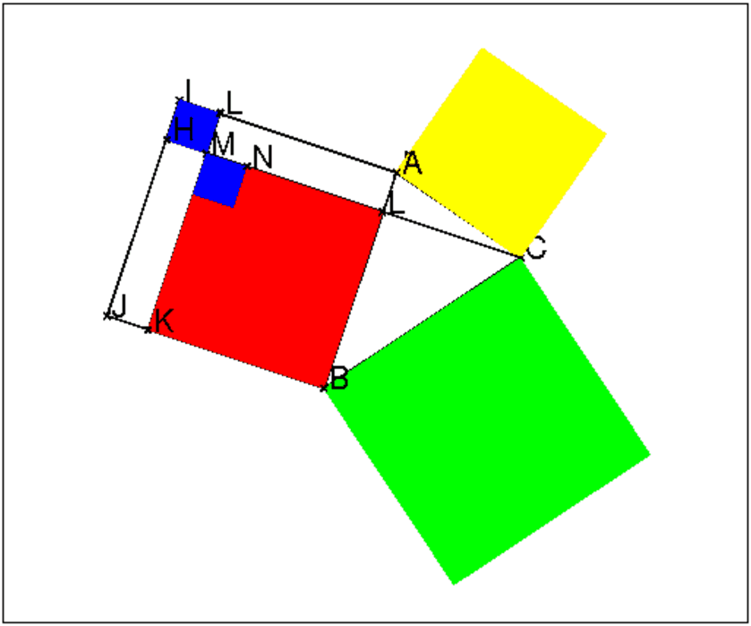

Dans un triangle rectangle, le carré de l’hypoténuse est la somme des carrés des deux autres côtés.
On considère un triangle rectangle T de coés a,b,c (c est
l’hypoténuse et on suppose a≥ b), on veut donc montrer que a2+b2=c2.
On fait quatre copies de ce triangle T et deux copies C1 et C2
d’un carré de cotés a+b. On dispose les quatres copies du triangle dans
les carrés C1 et C2 selon la figure ci-dessous :

Dans le carré C1 on a 4 triangles T et deux carrés l’un de cotés a
(de surface a2) et l’autre de cotés b (de surface b2).
Dans le carré C2 on a 4 triangles T et un carré de cotés c
(de surface c2).
Comme les surfaces de C1 et de C2 sont les mêmes on en déduit que :
a2+b2=c2.
carre(-4-i,-1-i); carre(1-i,4-i); triangle_rectangle(-0.5-i,0.5-i,2); segment(-3-i,-3+2*i); segment(-4+i,-1+i); segment(-3-i,-4+i); segment(-3+i,-1+2*i); segment(1+i,2-i); segment(1+i,3+2*i); segment(4,3+2*i); segment(4,2-i);
On ne dessine que le carré C2 et on a :
C2 a comme surface (a+b)2
les quatres triangles T ont comme surface 2ab
Le carré central a comme surface c2 et aussi (a+b)2−2ab
Donc :
(a+b)2−2ab=c2
On sait que (a+b)2=a2+2ab+b2 (identité remarquable) donc
c2=a2+b2
On considère un carré C de coté c et on place les quatres copies du triangles rectangle T selon la figure ci-dessous :
triangle_rectangle(0,1,2); triangle_rectangle(i,2*i,2); triangle_rectangle(-1+i,-2+i,2); triangle_rectangle(-1,-1-i,2);

Le carré de coté c est composé d’un carré de cotés a−b et
de 4 triangles T donc on a :
(a−b)2+2ab=c2
On sait que (a−b)2=a2−2ab+b2 (identité remarquable) donc
c2=a2+b2.
Soit une forme constituée de deux carrés de cotés a et b (avec
a≥ b) disposés selon la figure :

Comment découper cette forme pour faire un puzzle de trois pièces
permettant de reconstituer un carré ?
Solution
Si le carré de côtés a a pour sommets
(0,a,a(1+i),ia), on joint les points i(a−b) et a(1+i) ainsi que les
points i(a−b) et b(1−i).
On obtient :

On tape pour avoir cette figure :
carre(-4-i,-1-i); carre(-4-2*i,-3-2*i); segment(-3-2*i,-4+i,affichage=ligne_tiret); segment(-1+2*i,-4+i,affichage=ligne_tiret); carre(-i,3-i); carre(-2*i,1-2*i); couleur(triangle_rectangle(2*i,i,3),rouge); couleur(triangle_rectangle(1.1-1.1*i,1.1-2.1*i,3),rouge) couleur(triangle_rectangle(-2*i,1-2*i,3),vert); couleur(triangle_rectangle(3.1-i,4.1-i,3),vert)
On peut simuler un vrai puzzle en déplaçant avec la souris les trois
pièces.
On tape :
A:=point(-4,-1); B:=point(-1,-1); carre(A,B,C,D); E:=element(droite(A,B),0.3); carre(E,A,F,G); H:=F+C-B; segment(H,C); segment(H,G); P:=polygone(C,H,G,E,B); T1:=triangle(H,G,F); T2:=triangle(H,C,D);
Puis on bouge le polygône et les 2 triangles pour faire 1 grand carré :
pour cela on se met en mode Pointeur et on clique sur le côté EB du
polygône et on le déplace. Puis
on clique sur le côté HC du triangle(H,C,D) et on le déplace pour
amener D en E, puis on clique sur le côté HG du triangle(H,G,F) et
on le déplace pour amener F en B.
Remarque : on peut tracer les segments HC et HG seulement apres avoir
déplacé le polygône et les 2 triangles.
On obtient :

On dispose de deux carrés de côtés a et b (a≥ b).
Comment découper le carré de côtés a en quatre morceaux pour pouvoir
faire, avec ces 4 morceaux et le carré de coté b, un puzzle de cinq
pièces permettant de reconstituer un carré ?
Une solution
On pose a−b=2d et si le carré de côté a a pour sommets
(0,a,a(1+i),ia), on joint les points id et a+i(d+b) ainsi que les points
d+b et d+ia. Ces deux segments ont pour longueur c=√a2+b2, et se
coupent selon quatre angles droits qui deviendront les sommets du carré
solution de côtés c=√a2+b2.
On obtient le découpage du carré de côté a et le carré constitué
des 5 pièces dans la figure ci-dessous :

Pour faire cette figure on tape :
carre(-5-2i,-4-2i); carre(-5-i,-2-i); segment(-5,-2+i,affichage=ligne_tiret); segment(-3-i,-4+2i,affichage=ligne_tiret); carre(-i,3-i); segment(1+2*i,2-i) segment(0,3+i) carre(-2*i,1-2*i); segment(2-i,2.5-2.5*(i)); segment(1-2*i,1-3*(i)); segment(2.5-2.5*(i),-0.5-3.5*(i)); segment(1-2*(i),-1-2*(i)); segment(-1.5-0.5*i,0); segment(-1.5-0.5*i,-1-2*i); segment(-0.5-3.5*(i),-1-2*(i));
On peut simuler un vrai puzzle en déplaçant avec la souris les cinq
pièces.
On tape :
A:=point(-4,-1); B:=point(-1,-1); carre(A,B,C,D):; E:=element(droite(A,B),0.3); carre(E,A,F,G):; I:=milieu(E,B); J:=D+B-I; K:=rotation(A,pi/2,A+B-I); L:=C+A-K; segment(I,J); segment(K,L); M:=inter(droite(I,J),droite(K,L))[0]; quadrilatere(D,J,M,K); quadrilatere(C,J,M,L); quadrilatere(A,I,M,K); quadrilatere(B,I,M,L); quadrilatere(E,A,F,G);
Puis on bouge les 5 quadrilatères dans un grand carre : pour cela, on se met
en mode pointeur et pour faciliter la sélection des quadrilatèresn on prend
soin de ne pas dessiner le carre(A,B,C,D):;
grâce au :;. On clique successivement sur un côté de chaque
quadrilatère et on les déplace. Puis on dessine le carre(A,B,C,D)
en enlevant le :
On obtient :

Exercice : autre découpage
Trouver d’autres solutions.
On peut en effet découper le carre ABCD selon n’importe quelle parallèle
à IJ et KL...à vous de la montrer !
Soit ABC est un triangle quelconque et L le pied de la hauteur issue
de C. On pose AB=c, AC=b, BC=a, CH=h, HB=d1, HA=d2.
Montrer que :
h2=b2−d22,
h2=a2−d12,
d2=bcos(A),
en déduire que: a2=d12+h2=d12−d22+b2.
En observant la figure, montrer que :
la surface verte V = a2
la surface jaune J= b2
la surface rouge R=d12−d22

Que vaut la surface rouge R par rapport à c et d2,
par rapport à b,c,cos(A) ?
En déduire la généralistion du théorème de Pythagore.
Solution
On applique le théorème de Pythagore aux triangles rectangles
ALC et BLC donc :
h2=b2−d22 et
h2=a2−d12,
On a donc :
V=R+J=a2=d12−d22+b2
Puisque c=d1+d2 on a d1−d2=c−2d2=c−2bcos(A):
R=d12−d22=c(c−2d2)=c(c−2bcos(A))=c2−2bccos(A)
c2=R+2d22+2d1d2=R+2c*d2=a2−b2+2bccos(A)
Donc
a2=b2+c2−2bccos(A)